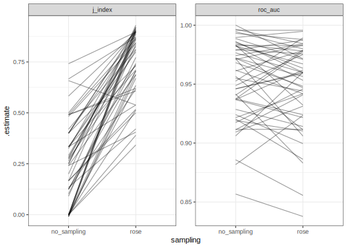

imbal_data <-
readr::read_csv("https://bit.ly/imbal_data") %>%
mutate(Class = factor(Class))
dim(imbal_data)
#> [1] 1200 16
table(imbal_data$Class)
#>
#> Class1 Class2
#> 60 1140Subsampling for class imbalances
model fitting
pre-processing
class imbalances
discriminant analysis
Improve model performance in imbalanced data sets through undersampling or oversampling.
Introduction
To use code in this article, you will need to install the following packages: discrim, klaR, readr, ROSE, themis, and tidymodels.
Subsampling a training set, either undersampling or oversampling the appropriate class or classes, can be a helpful approach to dealing with classification data where one or more classes occur very infrequently. In such a situation (without compensating for it), most models will overfit to the majority class and produce very good statistics for the class containing the frequently occurring classes while the minority classes have poor performance.
This article describes subsampling for dealing with class imbalances. For better understanding, some knowledge of classification metrics like sensitivity, specificity, and receiver operating characteristic curves is required. See Section 3.2.2 in Kuhn and Johnson (2019) for more information on these metrics.
Simulated data
Consider a two-class problem where the first class has a very low rate of occurrence. The data were simulated and can be imported into R using the code below:
If “Class1” is the event of interest, it is very likely that a classification model would be able to achieve very good specificity since almost all of the data are of the second class. Sensitivity, however, would likely be poor since the models will optimize accuracy (or other loss functions) by predicting everything to be the majority class.
One result of class imbalance when there are two classes is that the default probability cutoff of 50% is inappropriate; a different cutoff that is more extreme might be able to achieve good performance.
Subsampling the data
One way to alleviate this issue is to subsample the data. There are a number of ways to do this but the most simple one is to sample down (undersample) the majority class data until it occurs with the same frequency as the minority class. While it may seem counterintuitive, throwing out a large percentage of your data can be effective at producing a useful model that can recognize both the majority and minority classes. In some cases, this even means that the overall performance of the model is better (e.g. improved area under the ROC curve). However, subsampling almost always produces models that are better calibrated, meaning that the distributions of the class probabilities are more well behaved. As a result, the default 50% cutoff is much more likely to produce better sensitivity and specificity values than they would otherwise.
Let’s explore subsampling using themis::step_rose() in a recipe for the simulated data. It uses the ROSE (random over sampling examples) method from Menardi, G. and Torelli, N. (2014). This is an example of an oversampling strategy, rather than undersampling.
In terms of workflow:
- It is extremely important that subsampling occurs inside of resampling. Otherwise, the resampling process can produce poor estimates of model performance.
- The subsampling process should only be applied to the analysis set. The assessment set should reflect the event rates seen “in the wild” and, for this reason, the
skipargument tostep_downsample()and other subsampling recipes steps has a default ofTRUE.
Here is a simple recipe implementing oversampling:
library(tidymodels)
library(themis)
imbal_rec <-
recipe(Class ~ ., data = imbal_data) %>%
step_rose(Class)For a model, let’s use a quadratic discriminant analysis (QDA) model. From the discrim package, this model can be specified using:
library(discrim)
qda_mod <-
discrim_regularized(frac_common_cov = 0, frac_identity = 0) %>%
set_engine("klaR")To keep these objects bound together, they can be combined in a workflow:
qda_rose_wflw <-
workflow() %>%
add_model(qda_mod) %>%
add_recipe(imbal_rec)
qda_rose_wflw
#> ══ Workflow ══════════════════════════════════════════════════════════
#> Preprocessor: Recipe
#> Model: discrim_regularized()
#>
#> ── Preprocessor ──────────────────────────────────────────────────────
#> 1 Recipe Step
#>
#> • step_rose()
#>
#> ── Model ─────────────────────────────────────────────────────────────
#> Regularized Discriminant Model Specification (classification)
#>
#> Main Arguments:
#> frac_common_cov = 0
#> frac_identity = 0
#>
#> Computational engine: klaRModel performance
Stratified, repeated 10-fold cross-validation is used to resample the model:
set.seed(5732)
cv_folds <- vfold_cv(imbal_data, strata = "Class", repeats = 5)To measure model performance, let’s use two metrics:
- The area under the ROC curve is an overall assessment of performance across all cutoffs. Values near one indicate very good results while values near 0.5 would imply that the model is very poor.
- The J index (a.k.a. Youden’s J statistic) is
sensitivity + specificity - 1. Values near one are once again best.
If a model is poorly calibrated, the ROC curve value might not show diminished performance. However, the J index would be lower for models with pathological distributions for the class probabilities. The yardstick package will be used to compute these metrics.
cls_metrics <- metric_set(roc_auc, j_index)Now, we train the models and generate the results using tune::fit_resamples():
set.seed(2180)
qda_rose_res <- fit_resamples(
qda_rose_wflw,
resamples = cv_folds,
metrics = cls_metrics
)
collect_metrics(qda_rose_res)
#> # A tibble: 2 × 6
#> .metric .estimator mean n std_err .config
#> <chr> <chr> <dbl> <int> <dbl> <chr>
#> 1 j_index binary 0.749 50 0.0234 Preprocessor1_Model1
#> 2 roc_auc binary 0.949 50 0.00510 Preprocessor1_Model1What do the results look like without using ROSE? We can create another workflow and fit the QDA model along the same resamples:
qda_wflw <-
workflow() %>%
add_model(qda_mod) %>%
add_formula(Class ~ .)
set.seed(2180)
qda_only_res <- fit_resamples(qda_wflw, resamples = cv_folds, metrics = cls_metrics)
collect_metrics(qda_only_res)
#> # A tibble: 2 × 6
#> .metric .estimator mean n std_err .config
#> <chr> <chr> <dbl> <int> <dbl> <chr>
#> 1 j_index binary 0.250 50 0.0288 Preprocessor1_Model1
#> 2 roc_auc binary 0.953 50 0.00479 Preprocessor1_Model1It looks like ROSE helped a lot, especially with the J-index. Class imbalance sampling methods tend to greatly improve metrics based on the hard class predictions (i.e., the categorical predictions) because the default cutoff tends to be a better balance of sensitivity and specificity.
Let’s plot the metrics for each resample to see how the individual results changed.
no_sampling <-
qda_only_res %>%
collect_metrics(summarize = FALSE) %>%
dplyr::select(-.estimator) %>%
mutate(sampling = "no_sampling")
with_sampling <-
qda_rose_res %>%
collect_metrics(summarize = FALSE) %>%
dplyr::select(-.estimator) %>%
mutate(sampling = "rose")
bind_rows(no_sampling, with_sampling) %>%
mutate(label = paste(id2, id)) %>%
ggplot(aes(x = sampling, y = .estimate, group = label)) +
geom_line(alpha = .4) +
facet_wrap(~ .metric, scales = "free_y")
This visually demonstrates that the subsampling mostly affects metrics that use the hard class predictions.
Session information
#> ─ Session info ─────────────────────────────────────────────────────
#> setting value
#> version R version 4.3.0 (2023-04-21)
#> os macOS Monterey 12.6
#> system aarch64, darwin20
#> ui X11
#> language (EN)
#> collate en_US.UTF-8
#> ctype en_US.UTF-8
#> tz America/Los_Angeles
#> date 2023-05-25
#> pandoc 3.1.1 @ /Applications/RStudio.app/Contents/Resources/app/quarto/bin/tools/ (via rmarkdown)
#>
#> ─ Packages ─────────────────────────────────────────────────────────
#> package * version date (UTC) lib source
#> broom * 1.0.4 2023-03-11 [1] CRAN (R 4.3.0)
#> dials * 1.2.0 2023-04-03 [1] CRAN (R 4.3.0)
#> discrim * 1.0.1 2023-03-08 [1] CRAN (R 4.3.0)
#> dplyr * 1.1.2 2023-04-20 [1] CRAN (R 4.3.0)
#> ggplot2 * 3.4.2 2023-04-03 [1] CRAN (R 4.3.0)
#> infer * 1.0.4 2022-12-02 [1] CRAN (R 4.3.0)
#> klaR * 1.7-2 2023-03-17 [1] CRAN (R 4.3.0)
#> parsnip * 1.1.0 2023-04-12 [1] CRAN (R 4.3.0)
#> purrr * 1.0.1 2023-01-10 [1] CRAN (R 4.3.0)
#> readr * 2.1.4 2023-02-10 [1] CRAN (R 4.3.0)
#> recipes * 1.0.6 2023-04-25 [1] CRAN (R 4.3.0)
#> rlang 1.1.1 2023-04-28 [1] CRAN (R 4.3.0)
#> ROSE * 0.0-4 2021-06-14 [1] CRAN (R 4.3.0)
#> rsample * 1.1.1 2022-12-07 [1] CRAN (R 4.3.0)
#> themis * 1.0.1 2023-04-14 [1] CRAN (R 4.3.0)
#> tibble * 3.2.1 2023-03-20 [1] CRAN (R 4.3.0)
#> tidymodels * 1.1.0 2023-05-01 [1] CRAN (R 4.3.0)
#> tune * 1.1.1 2023-04-11 [1] CRAN (R 4.3.0)
#> workflows * 1.1.3 2023-02-22 [1] CRAN (R 4.3.0)
#> yardstick * 1.2.0 2023-04-21 [1] CRAN (R 4.3.0)
#>
#> [1] /Users/emilhvitfeldt/Library/R/arm64/4.3/library
#> [2] /Library/Frameworks/R.framework/Versions/4.3-arm64/Resources/library
#>
#> ────────────────────────────────────────────────────────────────────